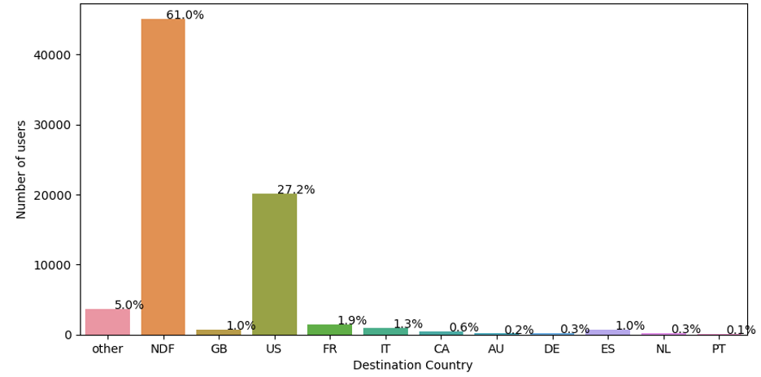
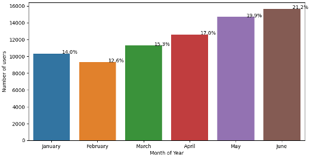
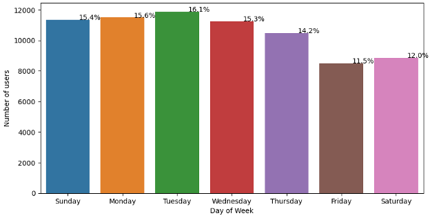

Airbnb New User Bookings
Project Description
The project's objective is to predict where a new user will book their first travel experience based on the user booking behaviors and demographic information, allowing Airbnb to share more personalized content with their community, decrease the average time to first booking, and better forecast demand. I am trying to address the following question: Can I develop a prediction model to predict in which country a new user's first booking destination will be based on user data?
To follow along, here is the Juptyer Notebook that was used for this project: Clink Here for the Notebook
Content-Based Recommender System
For this project, I created a content-based recommender system. Content-based systems generate recommendations based on the user's preferences and profile. The system predicts the user's behavior based on features that the user has interacted with positively - either through likes or other metrics, such as page views and interactions.
At a minimum, a content-based system requires item-level data and user-level data. It can also include similarity metrics to increase the number of items it is able to recocanpared to other types of recommender systems, a content-based system does not require data from multiple users.
Item-level data source — you need a strong source of data associated with the attributes of the item. For our scenario, I have data such as locality, user info, interaction data, language preference, and account information.
Similarity metrics — these metrics can be used at the item-level to establish items that are similar. In so doing, this increases the items available to be recommended based on the similarity of the items. Items that are not similar are unlikely to be recommended.
User-level data source — you need some sort of user feedback based on the item you're providing recommendations for. This level of feedback can be either implicit or explicit. In our sample data, we're working with interaction data and account information. The more user feedback and information you can track, the more beneficial it will be for your system.
Unique user data — content-based systems do not require that data from other users is present in order to make the prediction or recommendation. It is based solely on the unique data of the unique user.
Advantages and Disadvantages
Content-based systems are advantageous when there isn't a lot of rating data. For example, for making predictions or recommendations for a newer user. Instead of requiring a lot of data about past interactions or similarities to other users, the system is able to use the data unique to the current user and leverage ratings or interactions with similar items for a recommendation. Of course, the more data available about that user and ratings increases the likelihood of a good recommendation.
The disadvantage of a content-based system is that it can tend to make recommendations that may be obvious due to the fact the system is using data unique to a specific user. The system does not use the data from other users who are similar to the current user and therefore the scope of recommendations may be limited. For example, if a user interacts with listings about Spain but not about Argentina, the system will likely recommend properties in Spain, but won't at all recommend properties in Argentina.
Exploratory Data Analysis (EDA)
I will use three datasets for my analysis: train dataset (the training set of users), test dataset (the test set of users) and sessions dataset (web sessions log for users). In the training set, I identified that there were 213451 users and 16 features and 62096 users and 15 features in the test set. All the users in this dataset are from the USA.
Training Attribute Data:
- id: user id
- date_account_created: the date of account creation
- timestamp_first_active: timestamp of the first activity, note that it can be earlier than date_account_created or date_first_booking because a user can search before signing up
- date_first_booking: date of first booking
- gender
- age
- signup_method
- signup_flow: the page a user came to signup up from
- language: international language preference
- affiliate_channel: what kind of paid marketing
- affiliate_provider: where the marketing is e.g. google, craigslist, other
- first_affiliate_tracked: what's the first marketing the user interacted with before the signing up
- signup_app
- first_device_type
- first_browser
- country_destination: this is the target variable you are to predict
Session Data:
- user_id: to be joined with the column 'id' in users table
- action
- action_type
- action_detail
- Device_type
- secs_elapsed
In my initial analysis, I found that there are missing values in the dataset with few columns having unknown, therefore I replaced "unknown" to "NaN" to preprocess the data. The target variable "destination country" has 12 outcomes: 'US', 'FR', 'CA', 'GB', 'ES', 'IT', 'PT', 'NL',' DE', 'AU', 'NDF' (no destination found), and 'other'. The label' other' means there was a booking, but is to a country not included in the list, while 'NDF' means there wasn't a booking
Break Down of User Booking Locations
According to the above plot, nearly 61% of users did not book a destination. The most booked destination is the US(27.2%). Since all the users in the dataset are from the US, I can say they are most likely to travel within the US. Therefore, I will only consider users who book at least one destination. It means I will not use "NDF" in my analysis.
Number of New Users by Month of Year
The above plot shows the relationship between the month of year and the number of users that first started using the Airbnb application. There is an upward tick from January to June in this dataset which would lead me to believe that there is a relationship between month of year and number of new users.
Number of New Users by Day of Week First Visiting Airbnb
Depending on the day of week, there are fluctuations in when customers are getting onto the Airbnb site. Tuesday is the peak at 16.1% of the total dataset. With the lowest value being Friday at 11.5% of the total dataset.
Feature Selection
Looking mainly at the Session data, this is where majority of the feature engineering occurred, I grouped each action, action_type, and action_detail for each user, then calculated the number of times this user did that particular action. This aggregated the session to group all of the actions for each user into one data frame. I pivoted these values wider to enable model training. I then merged this data together with the attribute data from the main training dataframe.
The DateTime fields need to be worked with to obtain train ability and categorical relationships between the users. Changing the data type to actual date time was needed for further analysis. Then a choice of breaking down the weekday, month, year and hour of day was decided. The choice for this was because I thought there could be a relationship to day of week to where customers are deciding to go and especially month of year. Someone searching for a vacation location in December is going to want somewhere warm and tropical if located in the Northern Hemisphere, or in July customers are planning for holiday trips home and needing a place to stay. These human behaviors need to be taken into account and these determinations were decided upon.
One Hot Encoding to the categorical dataset was decided to be performed next. As well as a LabelEncoder to transform the target variable, booking location, to a numerical value for training purposes.
Model Training
There are several machine learning models that can be used to predict users' first travel destination based on user booking behaviors. The models selected for this project are Decision Tree, Random Forest, and XGBoost.
The following table shows the performance of different machine learning models applied for predicting users first travel destination from independent variables. To assess the performance of the model, I used accuracy, precision, recall, and F1 score evaluation metrics.
Decision Tree
It is a widely used supervised learning model in machine learning applicable to both classification and regression tasks due to its simplicity, interpretability, and ability to handle a variety of data types. It is organized hierarchically and has a root node, branches, internal nodes, and leaf nodes. At each step, the algorithm selects the best feature to split the data based on some criteria (e.g., Gini impurity or information gain).
Based on accuracy, precision, recall, and F1 score evaluation metrics, the results of the Decision tree model indicate that accuracy of the model is good (69.73%). As we can see from precision for US destinations, the model is able to actually predict 70% of destinations that would be "US" out of all the destinations which can be expected as from our earlier EDA where users mostly booked US. Recall for this says that the model is able to predict this outcome for 100%. F1- score for a US destination is 82% which is good. The model is not able to predict other destinations as users mostly book "US" country.
Random Forest
The random forest model is a supervised learning model that creates many decision trees. Each decision tree in the ensemble that makes up the random forest method is built of a data sample taken from a training set with a replacement known as the bootstrap sample. I tried using a Random Forest classifier with hyperparameter tweaking, but were unable to achieve a highest score that was competitive. The accuracy of the model is 69.72% which is the same as the decision tree model.
XGBoost
Extreme Gradient Boosting (XGBoost) is a distributed, scalable gradient-boosted decision tree (GBDT) machine learning framework. The top machine learning library for regression, classification, and ranking issues, it offers parallel tree boosting. I tuned `n estimators` and `max depth` two of the model's parameters and were able to obtain accuracy 69.79%. The reason for the lack of hyperparameter tuning was because of the lack of computational power to train the models in a timely fashion. Faster computers and more time would be needed to ensure a better hyperparameter tuning.
Conclusion
In conclusion from the three models it was the XGBoost that gave us the best results with 69.79% accuracy. It is evident that I need more time to fine-tune the parameters as the dataset was very large and computationally expensive. The dataset would benefit from a greater diversity and possibly a breakdown of locations to include destination States within the US, in addition to foreign destinations. I also need to explore other methods like KNN, Logistic regression which could possibly help in improving the accuracy.
Ethical considerations for recommender systems include the potential for bias and discrimination. Recommender algorithms can be responsible for shaping opinion and popular culture. One concern of an AirBnb recommender system would be how recommendations could impact the communities that are recommended and those that are excluded.
While a content-based recommendation system can provide valuable recommendations to users, it does have its limitations. It could be advantageous for AirBnb to use a hybrid recommender system that combines the benefits of both a content-based system and a collaborative filtering system, which includes data from multiple users. A hybrid system would mitigate the weaknesses of individual systems and allow for generation of more comprehensive recommendations based on multiple metrics. However, it is important to be aware that a more comprehensive system also adds computational complexity and requires a large database of ratings and other user info.